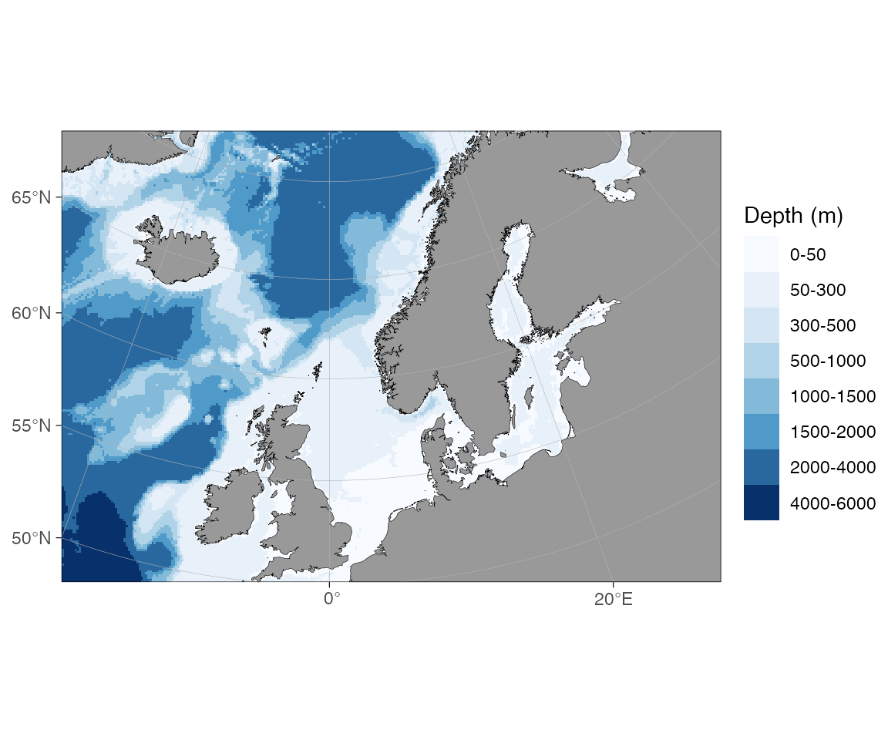

New features in ggOceanMaps version 3
Mikko Vihtakari (Institute of Marine Research)
19 June, 2026
Source:vignettes/new-features-v3.Rmd
new-features-v3.RmdBringing ggOceanMaps to the AI age
Version 3 marks a change in direction. From now on, ggOceanMaps is developed with the help of AI coding assistants (Claude Code, GitHub Copilot), and a core goal of the package is to help AI agents make good maps on behalf of their users. Plotting oceanographic data should be a one-sentence request, whether you type it yourself or ask an assistant to do it for you.
The most visible part of this shift is a new AGENTS.md
file shipped with the package. It gives AI assistants concise, accurate
instructions for using ggOceanMaps — the projection rules, the
shapefiles contract, how transform_coord()
works, and the common pitfalls — so they spend less time guessing and
more time helping. The documentation site was also reorganised around
this idea: a short user manual that links
out to focused, in-depth articles.
Everything below is new or substantially improved in version 3.
On-demand high-resolution bathymetry
The biggest functional addition is wcs_bathymetry():
high-resolution bathymetry downloaded on demand from Web Coverage
Services, with no manual file handling. You select it through the
bathy.style argument and ggOceanMaps fetches, caches, and
renders the right tiles for your map extent.
Two sources are available:
-
EMODnet (~115 m, European waters) —
bathy.style = "wcs_emodnet_blues"("wemb") or"wcs_emodnet_grays"("wemg"). -
ETOPO1 from NOAA NCEI (~1.85 km, global) —
bathy.style = "wcs_etopo_blues"("wceb") or"wcs_etopo_grays"("wceg"). Use this when EMODnet has no coverage.
# High-resolution EMODnet bathymetry around Tromsø, downloaded on the fly
basemap(c(18.4, 19.3, 69.5, 69.9), bathy.style = "wemb")Bounding boxes outside a source’s coverage fail cleanly with a
pointer to the right alternative, large boxes are tiled and mosaicked
automatically, and the downloaded tiles are cached under
getOption("ggOceanMaps.datapath") so the next map is
instant. See the Bathymetry article for
the full list of sources and rendered examples.
Build your own shapefiles
The create-your-own-bathymetry workflow is now complete.
raster_bathymetry() turns a GEBCO/ETOPO/IBCAO grid into a
bathyRaster, and two vectorisers consume
it: vector_bathymetry() for depth-contour polygons (as
before) and the new vector_land() for a matching land
polygon extracted from the same grid.
rb <- raster_bathymetry(
bathy = "path/to/your/grid.nc",
depths = c(50, 100, 200, 500, 1000),
proj.out = 4326,
boundary = c(-5, 10, 50, 60)
)
basemap(
limits = c(-5, 10, 50, 60),
shapefiles = list(
land = vector_land(rb), # NEW in v3
glacier = NULL,
bathy = vector_bathymetry(rb)
),
bathymetry = TRUE
)Because land and bathymetry come from the same grid, their edges line
up. The Customising shapefiles
article walks through this pipeline, clip_shapefile(),
and reading Norwegian Geonorge depth data with
geonorge_bathymetry().
Expanded documentation
Version 3 splits the old single manual into a concise overview plus a set of focused articles:
- Bathymetry — every way to get bathymetry into a map, from the shipped low-resolution grid to on-demand WCS and your own rasters.
- Customising shapefiles — supplying your own land, glacier, and bathymetry layers.
-
Adding graphical
elements — ocean-current arrows (velocity quivers and
schematic “Figure 1” arrows) and pie charts on maps via
scatterpie::geom_scatterpie(). - Cookbook — short, copy-pasteable recipes.
Tested and more reliable
Version 3 ships a comprehensive automated test suite: smoke tests
covering the historical regression corpus run everywhere, and
vdiffr SVG snapshot tests catch “code runs but wrong map”
regressions. This release also fixes several long-standing clipping
problems. For example, projected maps with decimal-degree limits used to
cut off land near the map edges —
basemap(c(-20, 30, 50, 70)) clipped off northern Norway.
The clip boundary is now densified before reprojection, so the full
extent is kept:

The map above is built entirely from the low-resolution data shipped with the package, reprojected to Arctic stereographic on the fly — no downloads required.
Upgrading from version 2
Version 3 is backwards compatible with version 2 map code; existing
basemap() and qmap() calls keep working. If
you used the older bathymetry styles, see the version 2 release notes and the Bathymetry article for the current
bathy.style names.